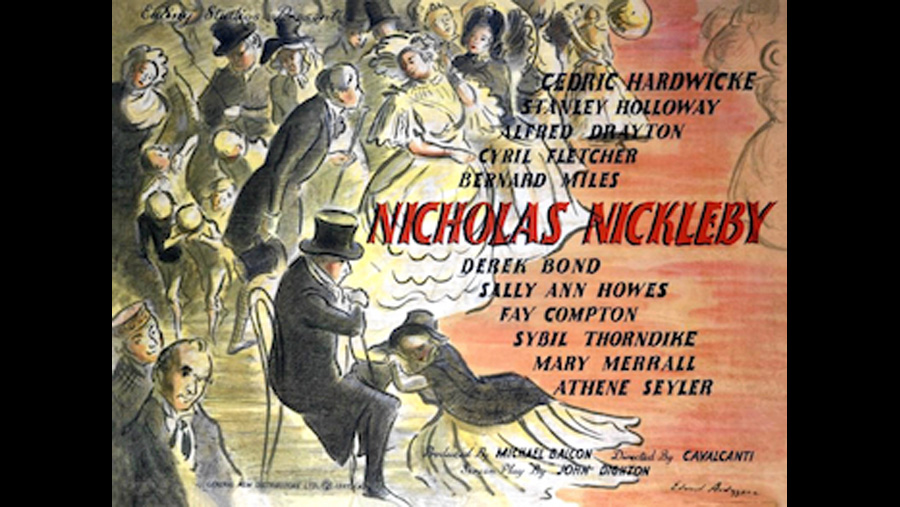

| Character | Actor |
|---|---|
| Nicholas Nickleby | Derek Bond |
| Kate Nickleby | Sally Ann Howes |
| Mrs. Nickleby | Mary Merrall |
| Ralph Nickleby | Sir Cedric Hardwicke |
| Newman Noggs | Bernard Miles |
| Smike | Aubrey Woods |
| Wackford Squeers | Alfred Drayton |
| Mrs. Squeers | Sybil Thorndyke |
| Sir Mulberry Hawk | Cecil Ramage |
| Lord Verisopht | Timothy Bateson |
| Vincent Crummles | Stanley Holloway |
| Mrs. Crummles | Vera Pearce |
| Ned Cheeryble | James Hayter |
| Charles Cheeryble | James Hayter |
| Frank Cheeryble | Emrys Jones |
| Mr. Bray | George Relph |
| Madeleine Bray | Jill Balcon |
| Sheriff Murray | Frederick Burtwell |
| Role | Person |
|---|---|
| Director | Alberto Cavalcanti |
| Screenplay | John Dighton |
Bosley Crowther of The New York Times felt "comparison to Great Expectations puts it somewhat in the shade, mainly because the former was so much more exciting as to plot and a good bit more satisfying in the nature and performance of its characters. There are just no two ways about it; the story of Nicholas Nickleby - at least, in screen translation - is a good whole cut below that of Great Expectations and its tension is nowhere near as well sustained ... No doubt, the compression of details and incidents compelled by John Dighton's script put Director Cavalcanti on a somewhat unenviable spot, which is evidenced by his failure to get real pace or tension in the film's last half. And this overabundance also hampers the rounding of characters ... Withal, Nicholas Nickleby is amusing as a chromo of Dickensian life. It is only that Great Expectations has led us to expect so much more".
Reviewing a revival, Time Out London observed, "For a director who dabbled in the avant-garde, Cavalcanti makes surprisingly little of the surreal possibilities of this convoluted Dickensian nightmare. As in Champagne Charlie he collaborated with art director Michael Relph to create an impressively atmospheric Victorian London, but stylish visuals hardly compensate for the flat, cursory rendering of some of Dickens' best drawn characters. Only Cedric Hardwicke as wicked Uncle Ralph and Bernard Miles as Noggs are given enough space to establish a proper presence. Meagre and one-dimensional, the film is finally smothered by Ealing's cosy sentimentality".